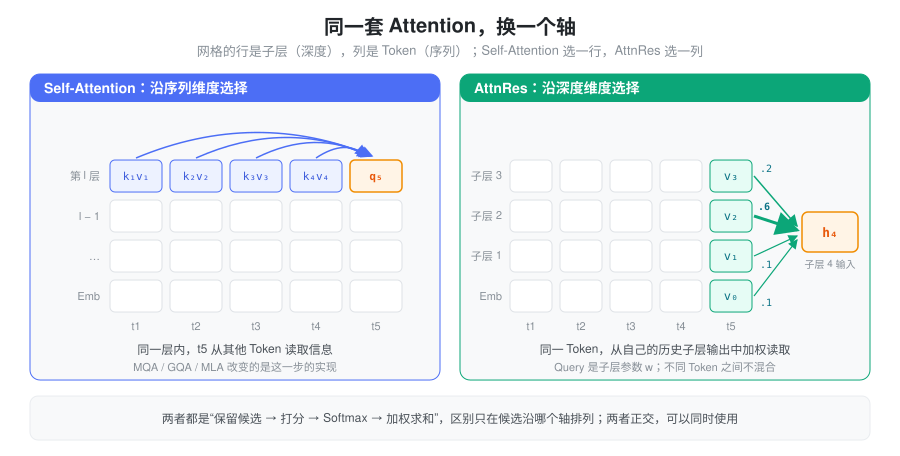
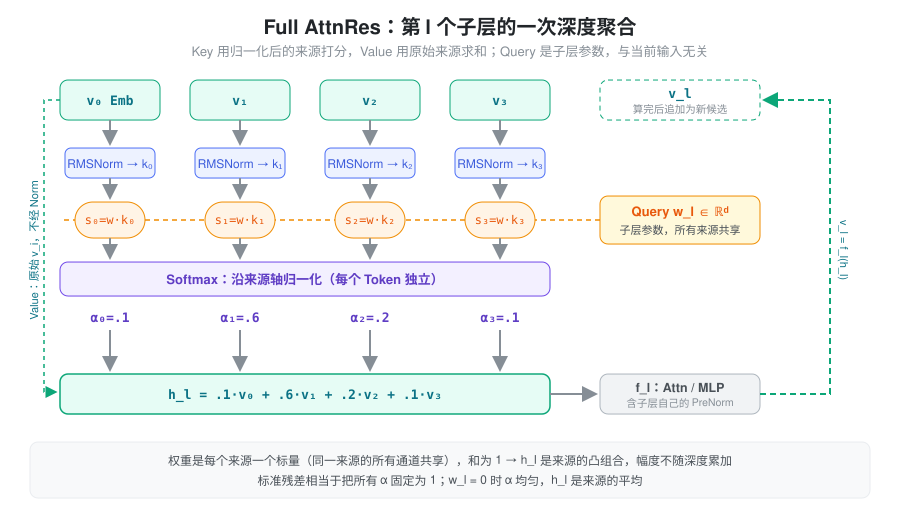
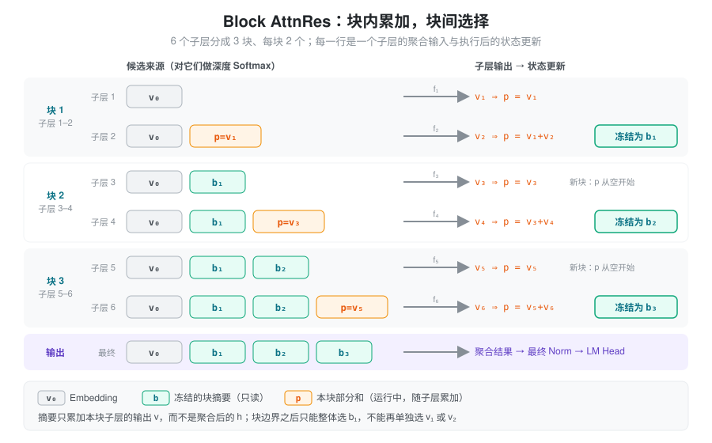
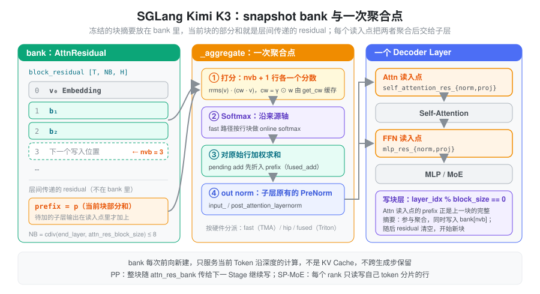

本文介绍 Moonshot / Kimi Team 的 Attention Residuals（AttnRes）：把残差连接从“固定累加”改成“沿深度做 Attention”。概念与公式依据 原论文第 2–4 节，参考实现见 官方仓库；推理侧的实现对照 SGLang 中的 Kimi K3。
问题：残差把所有历史层压成了一个和
一个 PreNorm 子层可以写成：
h_{l+1}=h_l+f_l(\operatorname{Norm}(h_l))
子层可以是 Self-Attention，也可以是 MLP / MoE。为简化符号，把 Norm 并入 f_l，记子层输出为 v_l=f_l(h_l)，Embedding 为 v_0。展开递推：
h_l=v_0+\sum_{i=1}^{l-1}v_i
这个式子说明残差同时做了两件事：
| 观察角度 | 残差连接在做什么 | 带来的结果 |
|---|---|---|
| 梯度传播 | 提供绕过子层变换的恒等路径 | 深层网络可以训练 |
| 信息传播 | 累加 Embedding 与历史子层输出 | 后续子层读到的是“所有历史的和” |
| 聚合权重 | 每个历史输出的系数恒为 1 | 无法按来源选择信息 |
第三行是 AttnRes 要解决的问题。假设当前输入是 v_0+v_1+v_2，即使当前子层其实最需要 v_1，加法也已经把三个来源混在一起；子层只能从混合结果里间接分离，而不能直接调大 v_1 的权重。
随着深度增加，累加状态的幅度变大，每个新输出在和中的相对占比变小，这就是 PreNorm Dilution 的入口。幅度的具体增长速度依赖各层输出的相关性，不存在对所有模型都成立的增长公式。
所以问题可以表述为：残差本身就是一次沿深度方向的聚合，只是权重被写死成了全 1。 能不能让每个子层自己决定从哪些历史层读多少？
核心抽象：把历史层输出当作 Attention 的候选
Self-Attention 解决的是“当前 Token 应该从哪些 Token 读信息”，做法是保留候选、打分、Softmax、加权求和。AttnRes 把同一套思路转 90 度：候选不再是同一层的其他 Token，而是同一个 Token 在历史各子层的输出。

| 机制 | 当前计算选择什么 | 聚合方向 | 解决什么问题 |
|---|---|---|---|
| Self-Attention | 同一层的不同 Token 表示 | 序列维度 | Token 之间的信息交互 |
| Full AttnRes | 同一个 Token 的历史子层输出 | 深度维度 | 历史层信息的选择 |
| Block AttnRes | 同一个 Token 的历史块摘要 | 深度维度 | 降低跨层状态的保存成本 |
AttnRes 的聚合算子不混合不同 Token：不同 Token 可以得到不同的深度权重，但各自只聚合自己位置上的历史表示。因此它与 MQA、GQA、MLA 处在不同位置——后者改变 Token Attention 的实现，AttnRes 改变子层之间的信息聚合，两类设计可以组合。
本文出现三种 Block，需要区分：
- Transformer Block（Decoder Layer）：通常包含 Attention 和 MLP 两个子层。
- AttnRes Block：把一组子层输出压缩成一个摘要的深度分组。
- GPU Thread Block：GPU 执行与线程协作单位。
下文的 L 统计 Attention / MLP 子层数量，不是 Decoder Layer 数量。
Full AttnRes：保留来源，再学习如何聚合
对第 l 个子层，候选来源是所有历史输出 V_l=\{v_0,v_1,\ldots,v_{l-1}\}。每个子层有一个自己的可学习向量 w_l\in\mathbb R^d，聚合过程为：
s_{i\to l}=w_l^\top\operatorname{RMSNorm}_l(v_i),\qquad \alpha_{i\to l}=\frac{\exp(s_{i\to l})}{\sum_{j=0}^{l-1}\exp(s_{j\to l})}
h_l=\sum_{i=0}^{l-1}\alpha_{i\to l}v_i,\qquad v_l=f_l(h_l)

与 Self-Attention 对应起来看：
| 组件 | AttnRes 中是什么 | 与 Self-Attention 的区别 |
|---|---|---|
| Query | 子层参数 w_l | 不是用 W_Qh 从当前 Token 生成 |
| Key | \operatorname{RMSNorm}(v_i) | 去掉来源幅度对打分的影响 |
| Value | 原始历史表示 v_i | 不做投影，保留原始幅度 |
| Softmax | 沿历史来源轴归一化 | 不是沿 Token 轴或 Hidden 轴 |
没有 W_Q/W_K/W_V 投影，也没有 1/\sqrt d 缩放；不必机械套用 Self-Attention 的参数化。
固定 Query 为什么能产生动态权重
训练结束后 w_l 是固定参数，但 Key 来自当前输入产生的历史表示。输入变了，Key 和分数随之变化，所以权重仍然是 Input-dependent 的。可以把 w_l 理解为这个子层学到的“选择标准”，历史表示是每次推理中被选择的内容。
这个设计的工程意义很大：Query 与当前 Hidden State 无关，意味着一个子层的 Query 在它的输入算出来之前就已知。后面的两阶段计算正是利用了这一点。
加权平均与固定累加的区别
假设某个 Token 的三个来源是 v_0,v_1,v_2，权重为 (0.1,0.7,0.2)，则 h_l=0.1v_0+0.7v_1+0.2v_2。
- 权重对来源不同，但同一来源的所有 Hidden 通道共享一个标量权重。这不是逐通道门控，也不是 Top-k 选择；有限分数下 Softmax 给每个候选非零权重。
- 权重非负、和为 1，输出是 Value 的凸组合：\|h_l\|\leq\max_i\|v_i\|。与标准残差相比，聚合本身不再让幅度随深度累加。这个性质只约束聚合；子层 f_l 仍可能放大输出，不能由此推出整个网络有界或梯度稳定。
- w_l=0 时所有分数为 0，权重均匀，h_l 是来源的平均值。它与标准残差相差一个“来源数量”的比例因子，并不数值相同。
Block AttnRes：用深度分块控制状态数量
Full AttnRes 的代价是要保存全部 L 个历史输出，并在每个子层上读一遍。Block AttnRes 的折中是：块内仍用普通残差累加，块与块之间用 Attention 选择。
把子层分成 N 组。令 B_n 为第 n 个深度块，完成后的块摘要为：
b_n=\sum_{j\in B_n}v_j,\qquad b_0=v_0
当前块执行到一半时，还维护一个本块已完成子层输出的部分和 p。每次聚合的候选是：
| 所在位置 | 候选来源 |
|---|---|
| 网络第一个子层 | Embedding |
| 某块第一个子层 | Embedding 与所有已完成块摘要 |
| 某块后续子层 | 上述来源，加当前块部分和 p |
| 最终输出聚合 | Embedding 与所有块摘要 |
聚合得到 h_l 作为子层输入；算出 v_l=f_l(h_l) 后更新 p\leftarrow p+v_l。到达块边界时，把 p 冻结成一个块摘要，再从空开始累加下一块。

两个容易出错的地方：
- 块摘要只包含本块子层自己的输出。如果把聚合后的 h_l（它已经混入了全部历史）加进摘要，历史信息会被重复累加。
- 块边界之后，后续子层只能选择 b_1 这个整体，不能再分别选择 v_1 和 v_2。这就是用状态压缩换来的选择粒度损失。
两个极端可以帮助理解 N 的含义：每块一个子层时，Block 就是 Full；只有一块时，候选只剩 Embedding 和“全部子层输出之和”两项，选择能力几乎退回标准残差。
代价：显存与访存
设当前处理的 Tensor 为 [B,T,d]，每元素 e 字节。以下只估算前向聚合使用的来源状态，不含模型权重、Token KV Cache 或反向激活。
| 形式 | 历史来源状态 | 直接实现的深度聚合计算量 |
|---|---|---|
| 标准残差 | O(BTd) | O(BTLd) 次加法 |
| Full AttnRes | O(BTLd) | O(BTL^2d) |
| Block AttnRes | O(BTNd)，另有当前部分和 | O(BTLNd) |
Block 的计算量来自“L 个子层各自访问最多约 N+1 个来源”，不能因为状态降到 N 个就说计算与 L 无关。打分和加权求和都是逐元素的点积与 AXPY，算术强度很低，瓶颈是把这些来源从 HBM 读出来，而不是 FLOPs。
以 Kimi K3 的形状估算：d=7168，实现里断言 bank 最多 8 行（Embedding 加块摘要），bf16 存储。一次 T=8192 的 Prefill：
M=T\cdot N\cdot d\cdot e=8192\times8\times7168\times2\approx 896\text{ MiB}
这块状态只活在一次前向内部；块数不多，长上下文 Prefill 时它仍然是一个不可忽略的临时 Buffer。训练中如果这些输出本来就要为反向保留，它们与来源状态可能重叠；采用重计算或流水线并行时，需要重新分析生命周期和跨 Stage 传输。
为什么可以拆开计算：Softmax 的可合并性
Query 是参数、已完成块摘要不再变化，所以同一块内所有子层对历史摘要的打分可以提前批量算好，只有当前部分和 p 需要随子层执行逐个处理。这是论文用来减少重复读取的两阶段计算。注意：被提前的只是深度聚合；Attention 和 MLP 本身仍然依赖前一个子层的输出，不能并行。
能拆开的数学基础，是稳定 Softmax 的三个统计量可以合并。对一组候选保存：
m=\max_i s_i,\quad z=\sum_i e^{s_i-m},\quad u=\sum_i e^{s_i-m}v_i
两组合并时令 m=\max(m_a,m_b)：
z=e^{m_a-m}z_a+e^{m_b-m}z_b,\qquad u=e^{m_a-m}u_a+e^{m_b-m}u_b,\qquad h=u/z
结果与一次完整 Softmax 数学上相同（浮点舍入可能不同）。不能把两组各自归一化后的输出直接相加，因为分母不同。这与 FlashAttention 的 online softmax 是同一个技巧，只是作用在深度轴上；SGLang 的 TMA kernel 正是按行分块、用 online softmax 流式处理来源的。
与其他残差机制的比较
| 机制 | 回答的问题 | 保存的状态与选择方式 |
|---|---|---|
| 标准残差 | 新输出如何加入当前状态？ | 单个累加状态 |
| 缩放 / 门控残差 | 当前更新占多大比例？ | 对递推中的状态和输出调整系数 |
| mHC | 多条残差流如何读、写与混合？ | 多流状态与受约束的混合 |
| Full AttnRes | 当前子层需要哪些历史来源？ | 保存全部历史输出，深度 Softmax |
| Block AttnRes | 怎样降低历史来源的保存成本？ | 块摘要 + 当前部分和 |
这个对比描述设计接口，不代表效果排序；比较实际模型需要控制参数量、数据、训练预算和执行配置。另外，这是模型结构的改变：把已训练模型的残差加法直接替换成加权平均会改变各层输入分布，需要相应训练或验证过的适配。
在 SGLang 中的实现
SGLang 只在 Kimi K3 上实现了 Block AttnRes（推理不需要 Full）。代码分三层：
| 位置 | 职责 |
|---|---|
srt/models/kimi_k3.py |
每层的打分参数、写块时机、每次前向开关 bank、PP 传递 |
srt/layers/layer_boundary/residual/attn_bank.py |
把“读 bank”挂到层边界的 residual 读写协议上 |
srt/layers/attn_residual.py |
bank 张量本身与聚合 kernel 的硬件分派 |
状态：一个 snapshot bank 加一条运行中的残差
AttnResidual
在每次模型前向时新建一次，持有：
block_residual：形状[T, NB, H]的 bank，每行是一个冻结的块摘要，第 0 行是 Embedding；num_valid_blocks：已写入的行数，即聚合时的nvb；- 而当前块的部分和 p 并不在 bank 里，它就是层间传递的普通 residual（代码里叫 prefix / stream head）。
配置项 attn_res_block_size 以
Decoder Layer 为单位，所以一个 AttnRes
Block 含 2 × attn_res_block_size
个子层。layer_idx % attn_res_block_size == 0
的层是写块层；bank 的行数是
cdiv(end_layer, attn_res_block_size)。

每个 Decoder Layer 有两个聚合点，各自一套参数：Attention
输入用 self_attention_res_norm +
self_attention_res_proj，MLP 输入用
mlp_res_norm +
mlp_res_proj；模型末尾还有一个
output_attn_res_*
做最终输出聚合（AttnBankOutputRead）。*_res_proj
是一个 H → 1 的
ReplicatedLinear，它的权重就是论文里的 w_l。
写块的时序有一个巧妙之处：在写块层的 Attention
读入点，当前 prefix
恰好是刚结束那一块的完整摘要。AttnResidual.forward(write=True)
先把它作为最后一个候选参与聚合，同时把它拷进 bank 的第
nvb 行；随后 residual
重置为空，本层 Attention
的输出单独成为新块的第一项。第 0 层的情况是
nvb == 0：只有 Embedding 一个候选，直接做
RMSNorm，并把 Embedding 写成 bank 第 0 行。
一次聚合点做了什么
聚合入口是 _aggregate，语义是“score →
softmax → mix → norm”：
- 对
nvb行 bank 加 prefix 共nvb + 1个来源，各自算 RMS，与 w_l 点积得到分数； - 沿来源轴 Softmax，对原始来源加权求和；
- 对结果做本子层原有的
PreNorm（
input_layernorm或post_attention_layernorm），交给 Attention / MLP。
注意第 3 步：AttnRes 的输出仍要过子层自己的 Norm，所以 kernel 把这个“out norm”一起融合了。另外两个融合点值得知道：
- Norm 权重折进 Query。 打分是 w^\top(\gamma\odot
v\cdot\text{rrms})=(\gamma\odot w)^\top
v\cdot\text{rrms}，
get_cw预先算好并缓存norm.weight ⊙ proj.weight，kernel 每行只需要一次点积加一次平方和。 - 残差加法折进聚合。 层边界声明更新是
PLAIN_ADD，但不单独执行：_aggregate_fused_add把“prefix = residual + 子层输出”和聚合放在一起。因为读出不是普通 Norm，_BankReadout.is_plain_norm = False，通用的 add+norm 融合 kernel 不能接管它。
后端按硬件分派：
| 路径 | 条件 | 做法 |
|---|---|---|
| fast | SM100+（除 SM12x），H = 7168 |
warp-specialized TMA kernel：生产者用
cp.async.bulk
搬运来源行，消费者对双缓冲的行块做 online softmax，out norm
融合，可顺带写 bank 行 |
| hip | ROCm 且在寄存器预算内 | 单个 Triton kernel，bank 留在寄存器，打分和加权共用一次读取 |
| fused | 其余情况 | 两个 Triton kernel：_score_kernel 按
(token, 行) 算分；_combine_kernel 按 (token, H
分块) 冗余地重算 ≤16 个元素的 Softmax 后加权，再调用 SGLang
的 RMSNorm |
aggregate_stream_torch 是 eager
参考实现，用于测试和 H 不是 1024
倍数时的兜底。fast 路径写 bank 行几乎是免费的：prefix
本来就要在打分阶段流过一遍。
并行与周边
- Pipeline Parallel：bank
是跨层状态，下一 Stage 需要前面写过的所有行。发送方把
block_residual放进pp_proxy_tensors["attn_res_bank"]，并先把 pending add 折进 hidden states；接收方用inherited拷入自己的 bank 继续写。 - Sequence Parallel（SP-MoE）：每个 rank
只持有自己 Attention-TP 分片的 token 行，bank
也按行切片读写（
_bank_rows）。聚合可以与 reduce-scatter / all-gather 融合（forward_sp_reduce_scatter、forward_sp_all_gather）。只写了本地分片后，不能再读全部行，written_on_slice用来拦截这种会读到陈旧数据的情况。 - 投机解码的 hidden state
捕获：普通模型直接捕获层间残差；K3
层间传递的只是当前块的部分和，不是完整状态，所以
_dspark_capture_stream调用aggregate_stream，算出下一个聚合点会形成的 Pre-norm 混合值作为捕获结果。 - Decode 与 KV Cache：bank 只服务于当前
Token 沿深度的计算，每次前向新建，不跨生成步保留；Decode 时
T是 batch 的 token 数，bank 很小。它与服务未来 Token 的 KV Cache 是两回事。
最小实现
只实现一个聚合点，省略 Norm 的可学习 Gain
和系统优化。sources 可以是 Full
的历史子层输出，也可以是 Block 的 bank 行加 prefix——这正是
aggregate_stream_torch 的做法。
import torch
def attention_residual(sources, query, eps=1e-6):
# sources: 非空列表，每个 [T, D]；query: 当前子层的 w_l，[D]
values = torch.stack(sources, dim=0).float() # [R, T, D]
rrms = torch.rsqrt(values.square().mean(-1, keepdim=True) + eps)
scores = (values * rrms * query.float()).sum(-1) # [R, T]，Key = RMSNorm(v)
weights = torch.softmax(scores, dim=0) # 沿来源轴归一化
mixed = (weights.unsqueeze(-1) * values).sum(0) # Value = 原始 v
return mixed.to(sources[0].dtype), weights
sources = [torch.randn(3, 8) for _ in range(4)]
mixed, weights = attention_residual(sources, torch.zeros(8))
torch.testing.assert_close(weights.sum(0), torch.ones(3))
torch.testing.assert_close(mixed, torch.stack(sources).mean(0)) # w=0 时为均匀平均stack 让 Shape 一目了然，但会多一次
[R, T, D]
的分配和读写；生产实现直接按行流式读取
bank，不物化这个张量。
小结
标准残差是一次权重写死为 1 的深度聚合；AttnRes 把它换成以子层参数为 Query、以归一化历史输出为 Key、以原始输出为 Value 的深度 Softmax，让每个子层自己决定读哪些历史层、读多少。Full 形式保留全部来源，Block 形式用“块内累加、块间选择”把状态压到 N 个摘要。由于 Query 与当前输入无关、Softmax 可合并，深度聚合可以流式、分块地计算；SGLang 的 K3 实现据此在 fast 路径上把 bank 读取、打分、混合、残差加法、子层 Norm 和写块融合进一个 kernel，每个聚合点基本只需把 N+1 行来源从 HBM 流式读一遍。